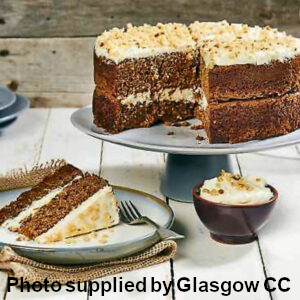

About Us
Welcome to The Farm website where you can find information about our products and things you can do here.
Whats here?
The Farm Shop, selling local produce and plants.
 The Café, try out the things you'll find in the Farm Shop.
The Garden, pick your own produce to take home with you!
To find out more go to Farm Shop
Things for Children
 Visit our Petting 'Zoo', and meet some farm animals.
Visit our Petting 'Zoo', and meet some farm animals.
Go to the Play Park, get active on our tractor track!
At The Barn theres a workshop where you can make things, plant seeds or 'milk' Daisy!.
Things for Everyone
Enjoy the local walks.
Our Corn Maize 'Maze' is open from Mid July until the end of October.
 Pick a Pumpkin for Halloween! Open every day in October.
Pick a Pumpkin for Halloween! Open every day in October.
Beer & Cider Festivals - try out the local beers and ciders available in our Shop.
To find out more go to Things to do
Where to find us
We are just under an hour from Glasgow by car; an hour and a half from Edinburgh and just over an hour from Carlisle.
| Opening times |
|---|
| Monday to Saturday: 8.00am to 5.00pm |
| Sunday: 9.00am to 4.30pm |
| Address |
| Nether Abbington Farm |
| Abington, Biggar ML12 6SD |
| Tel: 01864 502501 |
| email: info@abbingtonfarm.com |
From Glasgow (38.8 miles): follow M8 & M74 south to A702 in South Lanark; leave M74 at junction 13; at Abington Interchange, take 3rd exit onto A702
From Edinburgh (40.3 miles): follow A702 south west towards Abington; at Abington Interchange, take 1st exit onto A702
From Carlisle (58.3 miles) follow M74 north to the A702 in South Lanark; leave M74 at junction 13; at Abington Interchange, take 4th exit onto A702
On A702, after 0.3 mile take right turn to 'The Farm' Centre, Nether Abbington, Abington.